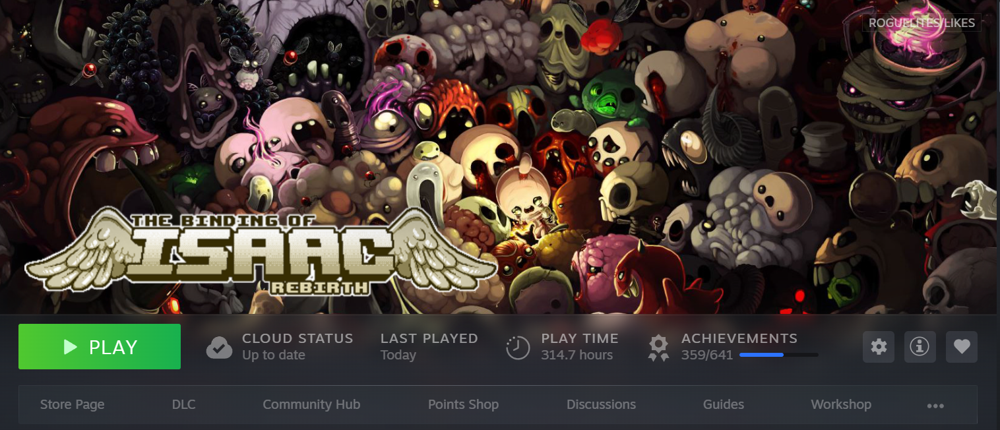

The Greatest Roguelike of all time,
The Binding Of Isaac: Rebirth!

The Binding Of Isaac: Rebirth, is a remake of a flash game created by renowned video game developer Edmund Mcmillen! It's a top down shooter with heavy roguelike elements! I don't expect you to know what a roguelike is. There's a million different definitions out there! But there are a few things that notably make a game a 'roguelike.' In my opinion, of course!
Roguelike Elements
- Permadeath: When you die, you lose EVERYTHING and are sent back to the start!
- Brutal Difficulty: The game doesn't hold your hand, whether its hails of bullets or enemies that do absurd levels of damage!
- Randomly generated levels and items: No run is the same, almost infinite replayability!
- An assortment of bosses: At the end of each floor, world, etc, there's a big bad boss waiting to defeat you!

As you can see I've played this game A LOT. I was first introduced to it by my friends (and if you think 300+ hours is a lot, they have up to 1000+) and have been addicted to playing it ever since. The only other roguelike I've played that comes to its level is Enter The Gungeon, and thats mostly nostalgia. The art, the gameplay, the music all together makes a beautiful game. Edmund balances the macabre with the cute perfectly.
You play as a small child named Isaac who escapes from his murderous mother by going through a trapdoor under the closet in his room. This trapdoor leads to a basement filled with murderous monsters who will stop at nothing to kill the poor boy! You descend from floor to floor, collecting and buying items, killing enemies, and fighting bosses until you get to the final (at least at first) boss, his own mother! It's such a fun game with a sad and tragic story that you slowly learn through the endings as you fight the final bosses over and over. You slowly unlock new items as well, for each completion mark you get as a character. These completion marks are gained upon defeating specific final bosses as certain characters! Some are better than others, so make sure to vary who you're playing!